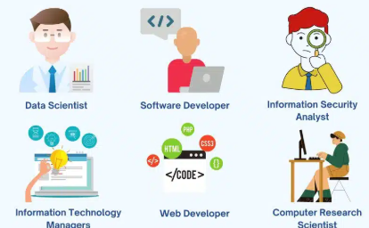

Election Season Run-down
September 26, 2025 by Alexander Waite
Jamaica has recently under-gone its general elections. Despite candidates representing
various parties participated, Jamaica historically has been run by two main parties:
The Jamaica Labour Party(JLP) and the People's National Party(PNP). Spare-headed by
The Most Honorable Dr. Andrew Holness, and Mark Golding respectively.
In a historic battle of wit and campaigning, the JLP secured a the majority of consituencies
winning 34 out of 63 seats in the house of representatives. Marking JLP's third consecutive
term in office.
Careers in Technology
September 24, 2025 by Alexander Waite

In the technological age, students around the world are being urged to pursue careers in technology.
The world is becoming increasingly digitized, and the demand for skilled professionals in fields such as
software development, cybersecurity, data science, web development, and artificial intelligence is on the rise.
As a result, educational institutions are adapting their curricula to better prepare students for these in-demand roles.
This includes offering specialized programs, hands-on training, and partnerships with tech companies to provide real-world experience.